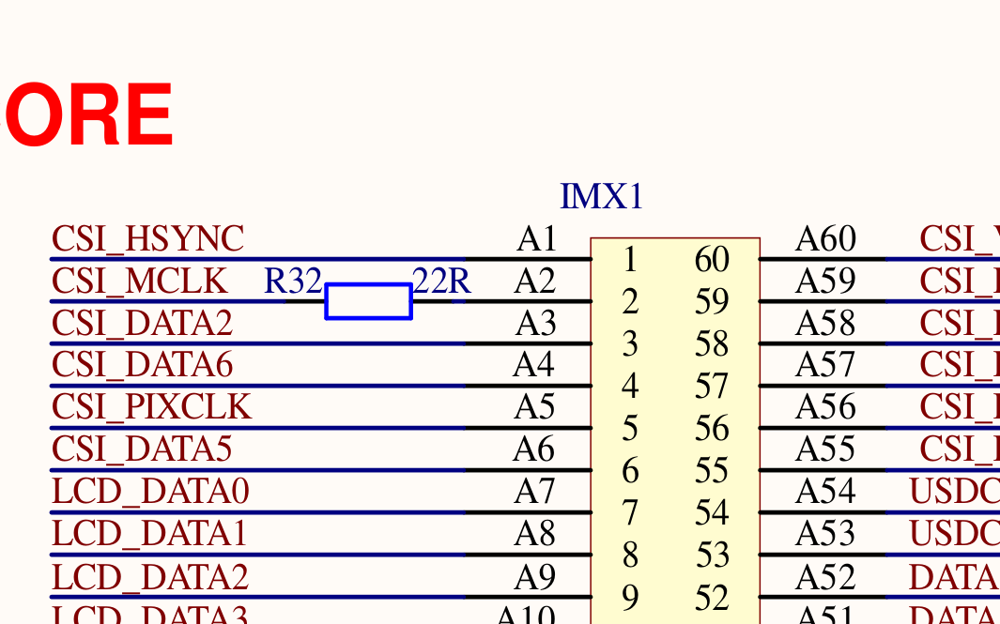

四种小电阻：上拉、下拉、串阻、终端
原理图的电阻大多没有参数意义：4.7k 是「定默认电平」，22Ω 是「压住振铃」，0Ω 是「留个选择」，50Ω 是「吃掉反射」。看错类型，就会得出「这个电阻没用、可以删掉」的错误结论，然后板子开始随机死机。这一章按四种用途拆开，每一种都给本板的真实位号和取值算法。
读完这一章，你应该能
- 区分上拉、下拉、串阻、终端四类电阻，并说出各自解决什么物理问题
- 用四条约束（漏电、上升时间、驱动能力、抗扰）给上拉/下拉选值
- 解释 22Ω 源端串阻为什么能抑制过冲，以及它同时带来了什么代价
- 判断一个电阻是「必装」还是「0Ω 选项/DNP」，以及拆掉会怎样
- 用万用表在不拆件的情况下推断板上是否有上下拉
1.10.1先分类：四种用途，四种物理机制
| 类型 | 位置 | 解决的问题 | 本板实例 |
|---|---|---|---|
| 上拉 | 信号 → 电源 | 给开漏/高阻态一个确定的「1」 | R40/R42 4.7k（I2C）、R9 10k（eMMC CMD）、R53 100K（EN） |
| 下拉 | 信号 → 地 | 默认「0」，防止悬空被干扰误触发 | R12 10k（KEY 上拉其实是上拉）、R74 10k（MOS 栅极） |
| 串阻 | 源端串联 | 阻尼过冲/振铃、限流、留测试点 | R32 22R（CSI_MCLK）、R45 22R（LCD_DE）、R27 22Ω（RS485） |
| 终端 | 负载端/时钟端 | 阻抗匹配，吃掉反射波 | R47 470R+C51（DDR 时钟端接）、DDR 100Ω 差分 |
同一个 0603 封装、同样 1% 精度，功能完全不同。判读方法只有一个：看它两端接到哪两个网络。一端是电源/地、另一端是信号 → 上下拉；两端都在信号路径上 → 串阻；一端信号一端地且阻值很小（几十欧）→ 终端。
1.10.2上拉：四条约束的取舍
上拉不是「随便给个 10k」。四条约束互相拉扯：
- 漏电约束（上限）：器件输入漏电 Ileak（典型 1µA，最坏 10µA）流过 R 产生的压降不能吃掉噪声容限。R ≤ ΔV/Ileak。
- 上升时间约束（上限）：tr≈2.2RC，R 越小边沿越快。协议对 tr 有硬指标（I2C 400kHz 上限 300ns）。
- 灌电流约束（下限）：开漏拉低时，R 上的电流 I=V/R 不能超过器件 IOL（I2C 规定 3mA）。
- 功耗约束（下限）：常低时 R 上一直耗 V²/R；电池设备要权衡。
本板 I2C 取 4.7k：3.3V/4.7k=0.70mA（<3mA，安全），2.2×4.7k×100pF=1.03µs（100kHz 可以，400kHz 不行）。换成 2.2k：1.5mA（仍小于 3mA 规范），tr=0.48µs，400kHz 还是勉强。要跑 400kHz 得 1k 以下，但灌电流会到 3.3mA 超规范——这就是为什么高速 I2C 要用专用缓冲器而不是硬调上拉。
DDR 的 R50/R51 10K 属于「弱上拉/下拉」：它们不参与时序，只保证 CKE/CS 在上电复位期间有一个确定电平，防止 DDR 在初始化前误动作。这种电阻取值大（10k–100k），因为不需要速度，只需要「别悬空」。
1.10.3下拉：默认「0」的安全绳
下拉常见于三类位置：
- 使能脚：DCDC 的 EN 若悬空，可能被容性耦合误开启。本板 VM 侧用 R53 100K 上拉、配合分压决定阈值——这里上拉是为了「默认开」，下拉则是「默认关」。
- MOS 栅极：Q4（SS8050 驱动）与 Q2（SI2302）的栅极/基极都靠电阻定默认态，避免上电瞬间误导通。
- 配置脚：BOOT_CFG 用 4.7K 上下拉组合成 8 位拨码（R45–R50），拨码开关断开时靠电阻给默认值，不能悬空——悬空读到的可能是任意值。
下拉的取值逻辑与上拉对称：够小以压住干扰，够大以省电。按键用 10k 是因为人手按下时间毫秒级，RC 无所谓；若用 1M，长线耦合就能把它拉高。
1.10.4串阻：22Ω 到底在压什么
数字信号的边沿很快（i.MX6ULL 的 IO 上升时间可到 1–2ns）。这么快的边沿遇上走线电感与负载电容，会在接收端产生过冲与振铃：
过冲幅度 ≈ ΔV ×（Z0 − Ro）/（Z0 + Ro）
其中 Z0 是走线特征阻抗（FR4 微带约 50–60Ω），Ro 是驱动器输出阻抗（典型 20–40Ω）。若 Ro 远小于 Z0，反射系数接近 +1，过冲可以到 1.5 倍电源——3.3V 域就出现 5V 尖峰，长期打 IO 的 ESD 结构。
串一个 22Ω 在源端，把总源阻抗抬到接近 Z0，反射系数趋零，过冲被吃掉。代价是：
- 上升时间变慢：22Ω×10pF≈0.22ns 的额外时间常数（很小，可以忽略）；但若负载是 50pF，就变成 1.1ns，开始有感。
- 分压损耗：接收端高电平变成 V×(Zin)/(R+Zin)，一般 Zin 很大，影响可忽略；但驱动 50Ω 终端时会明显衰减。
- 它同时是限流保护与测试点：拆掉它串入电流探头，就能测这条线的电流波形。

新窗口打开同页的 R45 22R（LCD_DE）同理：并口屏的 DE/CLK 频率可达数十 MHz，源端串阻是标配。RS485 的 R27 22Ω 除了阻尼，还兼作 A/B 线对外的限流与热插拔缓冲——外部接错线时它先坏，保住 U10。
1.10.5终端：吃掉反射波
串阻是「源端匹配」，终端是「负载端匹配」。四种常见拓扑：
| 拓扑 | 接法 | 用途 | 代价 |
|---|---|---|---|
| 并联终端 | 信号对地/对 VTT 接 R=Z0 | 点对点高速总线 | 静态功耗大（V²/R） |
| 戴维南 | 两电阻分压到 VDD/2 | 无 VTT 电源时替代 | 常驻电流、阻值需并联后等于 Z0 |
| RC 终端 | R+C 串联到地 | 时钟等单端信号，隔直流省功耗 | 只对高频有效 |
| 差分终端 | P/N 之间跨接 100Ω | DDR DQS、USB、以太网 | 需精确匹配 |
算例：1.35V DDR 若用 50Ω 并联终端，每条线静态耗 1.35²/50=36mW；64 条数据线就是 2.3W——这就是为什么 DDR3 用片内 ODT（On-Die Termination，按需开关）而不是外部电阻。本板 CORE p3 的 R47 470R + C51 2.2pF 就是给 SDCLK 的 RC 端接，只对时钟的高频分量起作用，不产生直流功耗。
差分 100Ω 的规则：DDR 的 DQS_P/DQS_N、USB 的 D+/D−、以太网的 TX± 都要在差分对内部跨 100Ω（或由 SoC 内部 ODT 提供）。跨错位置（放在连接器远端而不是接收端）等于没接。
1.10.60Ω 与 DNP：不是电阻，是「选项」
原理图上大量 0Ω 与 DNP（Do Not Populate，不贴）是设计者的决策记录：
- 0Ω：R31/R33（复位链路）、R77/R82（电源跳线）——用于隔离测试、切换供电来源、或留出飞线点。它同时是「可拆的短接线」。
- DNP：R85（RESET 上拉 10k）、R76（ON_OFF 上拉 10k）——位号在、焊盘在、但不贴。原因是这两个信号已由 CORE 侧电阻决定，底板再加会形成并联改变阻值。
看到 DNP 不要当成「漏了」。它往往意味着「默认不需要，但调试时可以贴上来验证某个假设」。
1.10.7不拆件怎么判断有没有上下拉
- 断电测阻值：红黑表笔跨接「信号—电源」或「信号—地」，读数就是该电阻与其它路径的并联。若读到 4.7k 附近，基本可以确认有上拉。
- 上电测电压：信号悬空（外设断开）时，若读到接近 3.3V → 有上拉；接近 0V → 有下拉；读到 1.6V 左右 → 两端都有电阻在分压（常见于双向总线空闲态）。
- 对照原理图：最可靠。位号 + 网络名一一对上，比猜快十倍。
一个实用技巧：怀疑某个配置脚接错导致启动失败时，直接在断电状态测该脚对地阻值。若原理图是 4.7K 下拉而实测 0Ω，说明拨码开关在 ON 位——这比反复上电试快得多。
四个真实误判
① 把 R53 100K 当成「多余的上拉」拆掉 → DCDC 使能悬空，上电时序错乱。
② 把 R32 22R 换成 0Ω「减少损耗」 → 摄像头偶发花屏，因为时钟过冲打到 IO 钳位。
③ 把 I2C 上拉从 4.7k 改成 1k「提高速度」→ 灌电流超 3mA，部分从机拉不低，总线锁死。
④ 认为 DNP 是「BOM 漏项」自己补上 → RESET 上拉并联，复位阈值漂移。
练习（答案在折叠里）
1. I2C 上拉 4.7k、总线电容 100pF，tr 多少？400kHz 能用吗？
2. 22Ω 串阻在 50Ω 走线上的反射系数大约是多少？
3. 1.35V DDR 用 50Ω 并联终端，每条线静态功耗？
4. 信号悬空实测 1.65V，说明什么？
5. 为什么 BOOT_CFG 电阻不能省？
6. R47 470R+C51 2.2pF 这种 RC 终端为什么不耗直流？
第一篇到此结束。接下来第二篇按「一类器件一章」拆开：电阻、电容、电感、二极管、三极管/MOS、光耦与继电器、连接器与开关、晶振与蜂鸣器——每章都落在本板真实位号上。